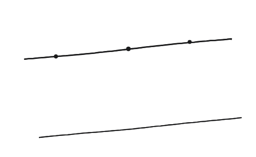
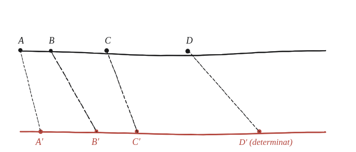

Es poden projectar tres punts qualssevol d'una línia sobre qualsevol altra tria de tres punts col·lineals? I quatre punts?

Què hem de produir
Dues respostes diferents: sí per a tres punts —sempre es pot trobar una projecció que hi arribi—, i en general no per a quatre, amb la raó exacta de per què quatre punts són diferents de tres.
Compta graus de llibertat
Triar un punt de projecció O i una segona recta dona prou llibertat per moure tres punts on es vulgui —tres condicions, prou paràmetres lliures per satisfer-les. Un quart punt, en canvi, ja no és lliure: la seva posició queda determinada pels altres tres i per la projecció concreta. Quina cosa, ja coneguda d'una qüestió anterior en 2D, és la que fixa aquest quart punt?
La construcció

Tancar-ho
Un cop fixada la imatge de tres punts A,B,C —sempre possible, perquè tres punts no porten cap invariant que els lligui—, la imatge D′ del quart punt D ha de complir que la raó doble (AC·BD)/(BC·AD) sigui la mateixa abans i després. Això determina D′ de manera única. Per tant, quatre punts només es poden projectar a quatre punts amb la mateixa raó doble, no a qualssevol quatre.
Sí per a tres punts: sempre es pot trobar una projecció que els porti a qualssevol altres tres punts col·lineals. No, en general, per a quatre: el quart punt queda determinat pels altres tres a través de la raó doble, que la projecció ha de conservar.
Comprovació
Amb A,B,C fixats en qualsevol posició, la raó doble original (per exemple 35/27) prediu exactament on ha de caure D′ —triant tres imatges A′,B′,C′ arbitràries i resolent D′ perquè la raó doble surti 35/27, la posició queda fixada sense cap més llibertat.
Aquesta és la primera vegada que es veu explícitament que la raó doble no és només "una cosa que es conserva": és la mesura completa de la llibertat que es perd en passar de tres punts a quatre.